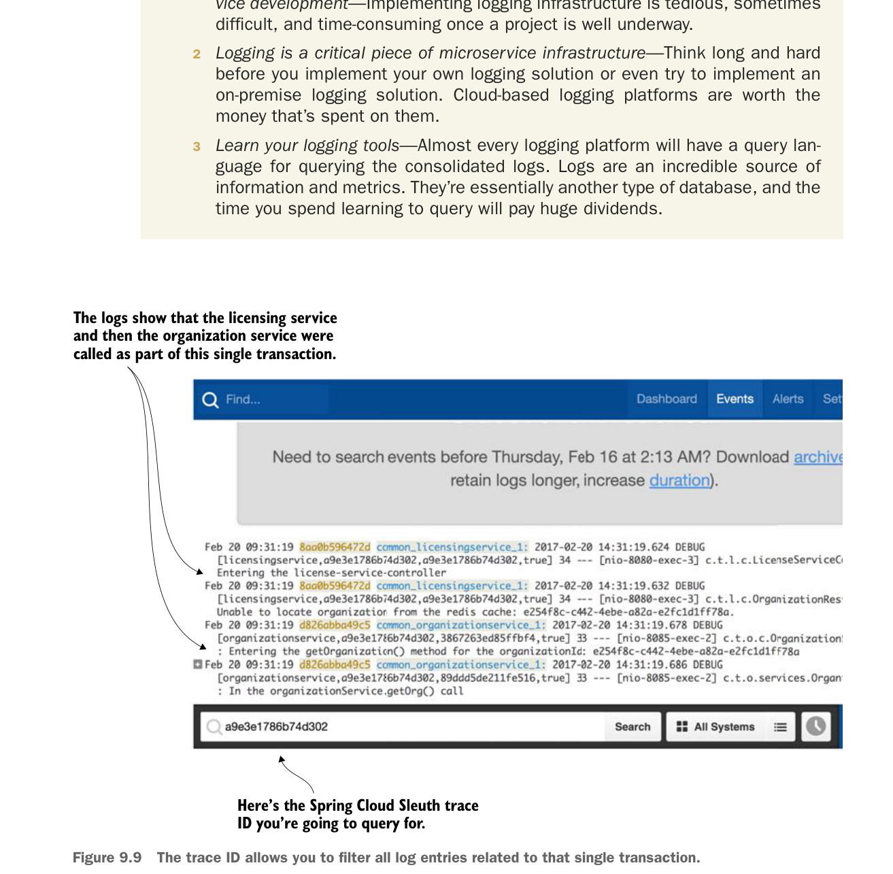

Chúng tôi chỉ phát hiện vấn đề sau khi dành 1,5 tuần truy vấn nhật ký và xem xét đầu ra trace của hàng chục kịch bản riêng biệt. Chúng tôi sẽ không tìm ra vấn đề nếu không có nền tảng ghi log tổng hợp đã được triển khai. Trải nghiệm này khẳng định lại một số điều:
- Hãy chắc chắn xác định và triển khai chiến lược ghi log sớm trong quá trình phát triển dịch vụ—Triển khai hạ tầng ghi log rất tẻ nhạt, đôi khi khó khăn và tốn thời gian khi dự án đã đi được khá xa.
- Ghi log là một phần quan trọng của hạ tầng microservice—Hãy suy nghĩ thật kỹ trước khi tự triển khai giải pháp ghi log hoặc thậm chí cố triển khai giải pháp ghi log on-premise. Các nền tảng ghi log trên cloud đáng với số tiền bỏ ra.
- Hãy học công cụ ghi log của bạn—Hầu hết nền tảng ghi log đều có ngôn ngữ truy vấn để truy vấn các nhật ký đã tổng hợp. Nhật ký là nguồn thông tin và số liệu đáng kinh ngạc. Về bản chất, chúng là một loại cơ sở dữ liệu khác, và thời gian bạn dành để học truy vấn sẽ mang lại lợi ích to lớn.

Nhật ký cho thấy dịch vụ licensing và sau đó là dịch vụ organization đã được gọi như một phần của giao dịch đơn này.
Đây là Spring Cloud Sleuth trace ID mà bạn sẽ truy vấn.
Trace ID cho phép bạn lọc tất cả mục nhật ký liên quan đến giao dịch đơn đó.